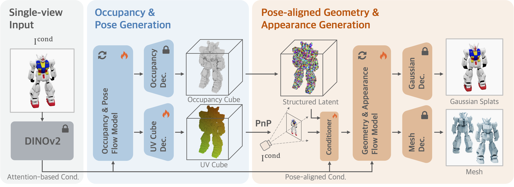
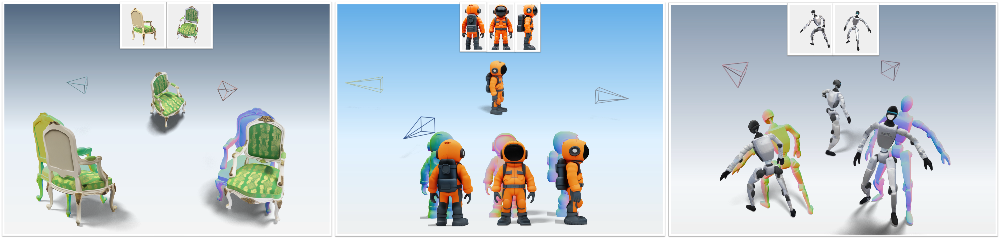

Pose-Grounded
Generative 3D Reconstruction from a Single Image
Introducing Cupid, a 3D generator that accurately infers the
camera pose, 3D shape, and texture from a single image.
Novel Generative Formulation: We reframe 3D reconstruction by jointly
synthesizing the object and its camera pose. This grounds the generation process, creating
an explicit link between the 3D output and the 2D input view.
Pose-Conditioned Architecture: We design a generator with a pose-aligned
conditioner. This novel mechanism directly injects pixel information into the
synthesis
process to prevent color drift and ensure textural fidelity.
Unified and Versatile Model: Our approach is a unified, versatile model
that
excels at diverse 3D synthesis tasks, including single image reconstruction, scene
generation, and multi-view reconstruction, without task-specific tuning.
This work proposes a new generation-based 3D reconstruction method, named Cupid, that
accurately infers the camera pose, 3D shape, and texture of an object from a single 2D image. Cupid casts 3D
reconstruction as a conditional sampling process from a learned distribution of 3D objects, and it jointly
generates voxels and pixel-voxel correspondences, enabling robust pose and shape estimation under a unified
generative framework. By representing both input camera poses and 3D shape as a distribution in a shared 3D
latent space, Cupid adopts a two-stage flow matching pipeline: (1) a coarse stage that produces initial 3D
geometry with associated 2D projections for pose recovery; and (2) a refinement stage that integrates
pose-aligned image features to enhance structural fidelity and appearance details. Extensive experiments
demonstrate Cupid outperforms leading 3D reconstruction methods with an over 3 dB PSNR gain and an over 10%
Chamfer Distance reduction, while matching monocular estimators on pose accuracy and delivering superior visual
fidelity over baseline 3D generative models.
We use a powerful generative technique called Flow Model. This model learns to transform random noise into a voxelized 3D representation, guided by the input image. To make this process efficient and effective, we break it down into two main stages, as shown in Figure 1.

Figure 1: Overview of Cupid. Our two-stage process first generates a coarse shape and a novel "UV cube" to determine the camera pose. This pose then guides a second stage to generate high-fidelity geometry and appearance.
Stage 1: Occupancy and Pose Generation.
The first stage generates a coarse representation of the object and simultaneously estimates the camera pose. Given an input image, our flow model produces two key outputs: an occupancy cube (indicating which voxels $\mathbf{x}_i$ in space belong to the object) and a novel UV cube (indicating the 2D pixel locations $\mathbf{u}_i$ for each 3D voxel).
we can robustly solve for the camera's projection matrix $\mathbf{P}^{*}$ using a classical least-squares solver.
Stage 2: Pose-Aligned Geometry and Appearance Generation.
With the camera pose now known, the second stage generates the fine-grained geometry and appearance. A common problem here is "color drift" and "detail inconsistency", where the 3D model doesn't perfectly match the input image's colors and details. We solve this with a pose-aligned conditioner that inject pixel-wise information.
For each voxel in the occupancy cube, we use the calculated pose to find exactly where it lands on the 2D input image. We then sample features (both high-level semantics from DINO and low-level color/texture) from that precise pixel location. These pixel-aligned features are injected directly into the generation process, ensuring the final 3D model has high-fidelity geometry and appearance that is faithful to the input view.
Extension 1: Composing Components for Full Scene Reconstruction
Our framework naturally extends to reconstructing entire scenes. We use an object detector (like SAM) to find all objects in an image. Then, we run our reconstruction process on each object independently.
Then, using the 3D-2D correspondences our method provides, we align each reconstructed object with a global depth prior (from a model like MoGe). This allows us to solve for each object's correct scale and position, composing them into a single, coherent 3D scene.
Figure 2: Component-Aligned Scene reconstruction. By reconstructing each object and then solving for its similarity transformation, we can accurately compose complex 3D scenes.
Extension 2: Multi-view Reconstruction
Although Cupid is trained with single image condition, it can be easily extended to multi-view reconstruction, thanks to the flexibility of our generative framework.
Given multiple images of the same object from different angles, we know that the 3D object cube should be the same across all views.
Therefore, we can run our flow model for each image, but share the same occupancy latent $\mathbf{X}$ across all views during the iterative flow sampling. This is similar to MultiDiffusion (which average the overlapped pixel regions in 2D during iterative sampling), but in the 3D space.

Figure 3: Multi-view conditioning. When multiple input views are available, we fuse the shared object latent across flow paths (similar to MultiDiffusion), enabling camera, geometry and texture refinement across all images. Top: inputs; Middle: reconstructed 3D object and camera poses; Bottom: rendered images and geometry.
Interactive 3D Visualization
Explore our reconstruction results interactively! The viewer below shows the full pipeline of Cupid: from the input image to the reconstructed 3D object with estimated camera pose.
Instructions: Use the navigation controls to rotate, pan, and zoom the 3D visualization. Click on the thumbnails below to switch between different reconstruction examples.